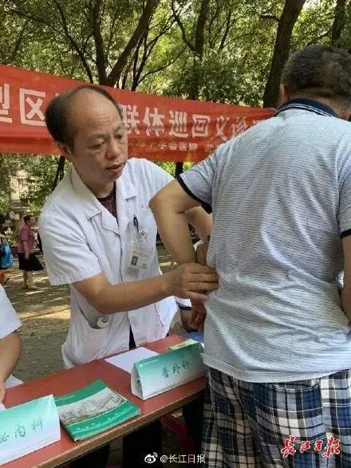
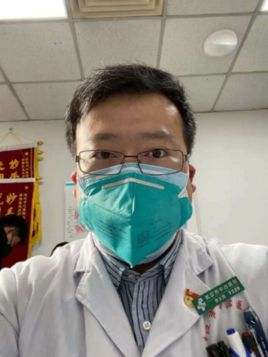
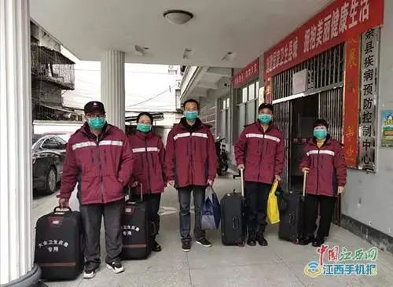
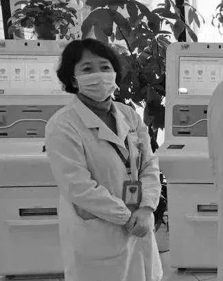
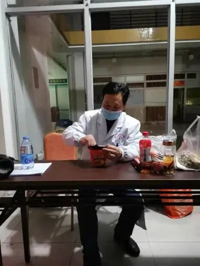
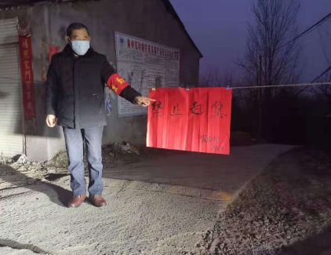
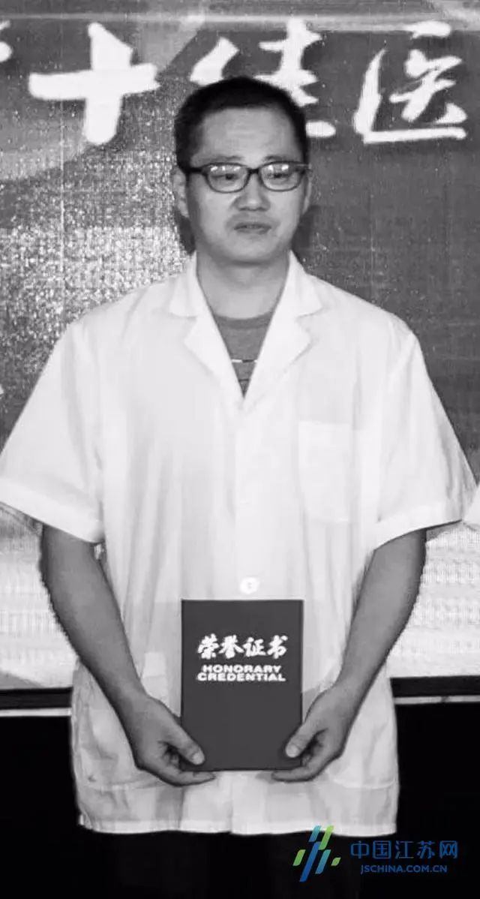

特稿|仁心赴国难 全国医护殉职已达26位(更新)
原文链接 备份链接 【财新网】（记者 吴红毓然 王梦遥 杨睿 冯华妹 唐爱琳 苑苏文）又有医生在抗击疫情前线不幸染上新冠肺炎去世。3月3日中午12时，武汉市中心医院眼科副主任、主任医师梅仲明，感染新冠肺炎去世，得年57岁。武汉市中心医院已 …
澎湃新闻记者 陈绪厚
不幸的消息再次传来。武汉市中心医院3月1日上午发布公告：武汉市中心医院甲状腺乳腺外科党支部书记、主任、主任医师、中国医师奖获得者江学庆同志， 在抗击新冠肺炎疫情工作中不幸染病，经全力抢救无效，于3月1日凌晨5点32分在武汉市肺科医院去世，享年55岁。
一周前的2月23日，我们痛别了黄文军、夏思思和杜显圣三名优秀的医护人员，他们在抗击疫情一线工作中不幸感染新冠肺炎，后经抢救无效离世。
此前，国家卫健委曾通报，截至2月11日24时，全国共报告医务人员确诊病例1716例，其中有6人以身殉职。
澎湃新闻（www.thepaper.cn）根据官方通报及公开报道不完全统计，截至2月24日，在此次抗击新冠肺炎的疫情中，全国至少已有9名医护人员在这场“战疫”中不幸感染新冠肺炎而逝世，年纪最大的63岁，最小的仅29岁。而其中，7人都是在2月之前感染发病。
同时，至少有11名医护人员在抗疫中因积劳成疾、突发心梗、车祸等原因去世。
20人中，有的是医院院长，带领全院医护人员抗击在疫情一线，发病后仍在为改造医院收治病患的事情而忙碌，最后医院改造如期完成，他却被送进了重症监护室；有的是村医，在偏远的乡村地区默默坚守岗位，一位67岁村医在抗击疫情中因病去世了，他的儿子接替了他的岗位，继续奋战；有的是90后医生，29岁丈夫没法向妻子兑现迟到了两年的婚礼，同样29岁的妈妈留下了2岁的孩子，孩子还不知道她去世的消息……
“健康所系，性命所托。”他们用行动践行了《医学生誓言》里的这句话。而他们的背后，是湖北50多万放弃休假、坚守岗位的医护人员，是从全国各地前来支援湖北的近4万名医护人员，是奋战在全国抗击疫情一线的广大医护群体，他们艰苦卓绝地战斗，只为打赢这场疫情保卫战。
保护关爱医务人员是打赢疫情防控阻击战的重要保障，2月3日召开的中共中央政治局常务委员会会议就强调，坚决把救治资源和防护资源集中到抗击疫情第一线，优先满足一线医护人员和救治病人需要。会议指出，继续根据需要从全国调派医务人员驰援武汉，同时保护好医务人员身心健康。2月22日，中央应对新型冠状病毒感染肺炎疫情工作领导小组印发《关于全面落实进一步保护关心爱护医务人员若干措施的通知》，就进一步保护关心爱护医务人员提出十方面措施。国家卫生健康委也于2月18日印发通知，从7个方面进一步加强疫情防控期间医务人员防护工作。
澎湃新闻注意到，对于抗击新冠肺炎的一线医护人员，全国多地也出台了一系列关爱政策。如，广东省总工会组建心理健康服务团队，对有需要的医护人员及其家属提供心理危机干预和心理疏导服务。对感染新冠肺炎的医务人员，每人提供3万元救助金；参加了在岗职工医疗互助保障计划的，还可以给每人最高赔付5万元。
同时，湖北、江苏南京、山西大同、内蒙古包头、重庆、青海、山东等地出台文件，将给抗疫一线医护人员子女升学照顾性政策。
部分因新冠肺炎殉职的医务人员
**
江学庆，男，55岁，**武汉市中心医院甲状腺乳腺外科党支部书记、主任、主任医师、中国医师奖获得者
据武汉市中心医院公告，江学庆同志1964年3月31日出生于湖北省武汉市。
1986年7月从同济医科大学临床医学专业毕业后一直在武汉市中心医院工作，从事外科专业30余年。在医院工作期间兢兢业业、甘于奉献，对患者耐心细致，尽职尽责，为医院发展作出了重要贡献。
江学庆同志在抗击新冠肺炎疫情工作中不幸染病，经全力抢救无效，于2020年3月1日凌晨5点32分在武汉市肺科医院去世，享年55岁。
黄文军，男，42岁，孝感市中心医院呼吸内科副主任医师

2001年6月，黄文军毕业于武汉大学医学院临床医学系，同年8月起在孝感市中心医院呼吸内科工作。
2004年-2005年，他在华中科技大学同济医院呼吸内科进修学习一年，于2006年12月被聘为主治医师，2012年被聘为副主任医师。
疫情发生后，黄文军写下请战书：“苟利国家生死以，岂因祸福避趋之。我申请去隔离病房，共赴国难，听从组织安排！”
2月23日晚，孝感市中心医院官网发布讣告：在抗击新冠肺炎的战役中，黄文军不幸被感染，经多方抢救医治无效，于2月23日19时30分不幸牺牲。
据同事介绍，1月27日，黄文军称有点干咳，不太舒服。两天后，病情加重，后于1月29日确诊感染新冠肺炎。
夏思思，女，29岁，武汉协和江北医院消化内科住院医师

协和江北医院发布的公告显示，在抗击疫情一线，夏思思不幸感染新冠肺炎，于1月19日被收治，医院全力救治。2月7日，病情恶化，医院紧急将其送往武汉大学中南医院救治。2月23日6时30分，夏思思经救治无效在武汉大学中南医院去世。
夏思思出生于医护世家，她的父亲是军医，母亲是护士。受家庭影响，她从小就立下了当医生的志向。她和丈夫都是协和江北医院的医生。丈夫回忆说，他俩都在武汉江汉大学学医，是校园爱情，一起走过11个年头。
彭银华，男，29岁，武汉市江夏区第一人民医院呼吸与危重症医学科医生
彭银华和妻子
武汉市江夏区第一人民医院发布的公告显示，彭银华在抗击疫情一线不幸感染新冠肺炎，于1月25日入住该院，1月30日病情加重，被送往金银潭医院治疗。因病情恶化，经抢救无效，于2月20日21时50分去世。
彭银华出生农村家庭，毕业于湖北科技学院临床医学院，住院医师规范化培训的3年，除了正常上班、学习，他还兼职医院120急救工作，经常给父母寄钱。
彭银华和妻子结婚两年，妻子已怀孕6月。他原计划在2月1日（正月初八）为妻子准备一场迟到两年的婚礼，已经邀请了科室同事们“热闹一下”，办公桌抽屉里还放着没发出的请柬。
刘智明，男，51岁，武汉市武昌医院院长
澎湃新闻此前报道，1991年7月，刘智明从原湖北医学院本科毕业，被分配到原郧阳地区人民医院外三病区从事神经外科临床工作。
1995年，刘智明离开十堰，只身前往武汉工作。
无论是在郧阳医院，或是武汉三院，还是武昌医院，刘智明的拼劲几乎无人不知。
作为武汉市首批发热门诊定点医院的院长，疫情发生以来，刘智明带领全体医务人员奋战在抗疫一线。1月22日，刘智明出现身体不适，于次日确诊患新冠肺炎。1月24日，因病情加重，刘智命被转入武昌医院重症监护室（ICU）。2月17日，刘智明病情危重。2月18日，在用ECMO治疗17小时后，刘智明去世。
柳帆，女，59岁，副主任护师
柳帆生前在武汉市武昌医院举办的梨园街社区卫生服务中心注射室从事护理工作。
据@武汉发布消息，2020年2月2日前，柳帆一直正常在岗值班。2月3日至2月5日轮休三天。2月6日早上7点，柳帆给科室护士长打电话诉身体不适，有发热症状，护士长当即安排她到武汉市武昌医院西院区进行全面检查；2月7日被确诊为新型冠状病毒肺炎，当日立即入院治疗，在住院期间，医院尽全力进行救治，但由于基础性疾病较多，病情呈进行性加重，2月14日18时30分经抢救无效逝世。在她去世前，其父母和弟弟也先后因感染新冠肺炎去世。
肖俊，男，50岁，武汉市红十字会医院普外科副主任医师

长江日报 图
大学刚毕业，肖俊便到武汉市红十字会医院工作，至今已有29年。2月21日晚，武汉市红十字会医院发布公告：肖俊在抗击疫情一线不幸感染新冠肺炎，1月26日在本院住院治疗，1月27日转武汉市金银潭医院治疗，后因病情恶化，经抢救无效，于2月8日18时13分在武汉市金银潭医院去世。
同事回忆说，平时大家都喜欢调侃肖俊，叫他“阑尾小王子”，取这个名字，是因为他一天要做7、8台阑尾手术，很多患者点名都要找他主刀、管床。有时带着亲友来找他，遇上他外出开会，患者都要等着他回来。
李文亮，男，35岁，武汉市中心医院眼科医生

李文亮于2004年参加高考，从武汉大学临床医学七年制专业毕业后，先在厦门工作了三年，2014年回到武汉，一直在武汉市中心医院工作。
2020年1月8日，李文亮在接诊时遇到不明原因的病毒性肺炎患者并受到感染。武汉市中心医院发布的信息显示，李文亮在抗击新型冠状病毒感染的肺炎疫情工作中不幸感染，经全力抢救无效，于2月7日凌晨2点58分去世。
杜显圣，男，54岁，海南琼中阳江农场医院医生
据海南日报报道，1月18日，杜显圣在工作期间出现发热、咳嗽等症状，自行用药2天。由于病情未见好转，1月22日到儋州市人民医院就诊，医院怀疑其被新型冠状病毒感染。1月25日，被确诊为新型冠状病毒肺炎，随即由儋州市人民医院转到海南省人民医院。2月23日中午，经抢救无效，杜显圣去世。
澎湃新闻此前报道，杜显圣是阳江农场医院出现的本地聚集性疫情的病患之一，他曾接诊过该院防保组组长贾某某，而贾某某早前与曾某某（其父母1月初曾到武汉旅游）有过密切接触。1月29日，海南省卫健委发布通报指出，截至1月29日，海南省报告两例本地感染新型冠状病毒感染的肺炎确诊病例，分别为杜某某（即杜显圣）和贾某某。
部分因其他原因不幸去世的医务人员
王土成，男，37岁，河南省许昌市长葛市董村镇新王庄村村医
据中新网报道，2月10日，河南省长葛市董村镇新王庄村村医王土成因劳累过度，突发急性心肌梗死，年仅37岁。
王土成1999年从长葛市卫校毕业，2005年取得乡村医生资格证，此后一直在新王庄村卫生室工作。连续多日奋战在抗击新冠肺炎疫情一线的王土成，为了全天候保持“战斗”状态，主动和家人隔离，将“卧室”设在了村卫生室。
姜继军，男，51岁，江苏省泰州市人民医院感染科医生

据南方都市报报道，1月23日，姜继军医生在查房后奔赴发热门诊的时候，因呼吸心跳骤停倒下，经抢救无效后去世。
在抢救姜继军医生的过程中，专家基本确定是心脑血管方面原因导致的猝死。
姜继军生前是副主任医师，从事感染病诊疗20余年，对不明原因发热待查的诊治有丰富的临床经验。
蒋金波，男，58岁，江西省赣州市大余县疾病预防控制中心医师

蒋金波（左一） 中国江西网 图
据江西日报报道，1月28日，在疫情防控一线连续工作多日，因劳累过度突发心梗，蒋金波经抢救无效去世。他最后一天的午饭，是方便面；最后的生命时刻，他还惦记着工作。
1982年从赣州卫校毕业之后，蒋金波一直服务于大余县疾控事业，先后历经2003年非典、2009年大余“7·3”洪灾、2013年禽流感、2019年人感染猪链球菌病等重大防疫“战役”，多次被评为卫生系统先进个人。
徐辉，女，51岁，江苏省南京市中医院副院长

据微信公众号“南京发布”消息，2月7日0时03分，在疫情防控中连续奋战18天，徐辉积劳成疾不幸去世。
徐辉很忙，她不仅是南京市中医院新型冠状病毒感染的肺炎防治指挥部副组长，也是医院防治工作小组组长。在奋战抗疫一线的18天里，她牵头制定了《南京市中医院新型冠状病毒感染肺炎的应急预案》，组建发热门诊、预检分诊的医疗队伍，筹集防控物资……
毛样红，男，52岁，福建省南平市浦城县仙阳镇中心卫生院副院长

据央视网报道，1月25日，毛样红在高速检查站检测过往车辆乘员体温。当晚9点多，一辆轿车途经此地看到信号后，误将油门当刹车，导致车辆失控，撞倒毛样红，后经抢救无效死亡。
据家属介绍，当天本不是毛样红值班。因为医院人手不够，毛样红主动申请加班。没想到发生了意外，在大年初一倒在防疫一线。
宋英杰，男，28岁，湖南省衡山县东湖镇马迹卫生院药剂组副组长

据中新网报道，从大年初一开始，宋英杰连续多日在岳临高速东湖高速路口对过往人员进行排查，检测体温。
2月3日凌晨，他和同事在高速路口值班后，回到在医院的宿舍。
同日下午，宋英杰被发现在医院宿舍内猝死。
衡山县委宣传部表示，宋英杰在抗击新型冠状病毒感染的肺炎疫情工作中，多日连续超负荷工作，因劳累过度引发心源性猝死，因公殉职。
魏安君，男，67岁，湖北襄阳市襄州区龙王镇肖集村村医

据湖北日报报道，魏安君生前系襄阳市襄州区龙王镇肖集村村医，2012年开始担任肖集村四组组长。新冠肺炎疫情阻击战打响后，他主动请缨，连续14天日夜奋战在肖集至文湾村的疫情防控点上，克服防护措施简单、村民防控意识不强、任务重人员少等困难，坚持全天候驻守卡点，测体温、先后劝返群众300余人次，因过度疲劳倒在抗疫一线，经抢救无效去世。
魏安君去世后，儿子魏雄伟接替了他的岗位。魏雄伟说，“十多年前，我考取了相关资格证，接替父亲成为了一名村医；如今，我还要继续接替父亲的岗位，坚持战斗在抗疫一线，为战胜疫情出力。”
朱峥嵘，男，48岁，江苏省南通市启东市南阳镇社区卫生服务中心病房组长

中国江苏网 图
据启东市卫健委发布的消息，2月22日，朱峥嵘全身多脏器功能衰竭抢救无效离世。朱峥嵘于1973年5月生，1996年8月参加工作，2017年11月入党，曾先后获得启东市卫生健康系统“十佳医生”、优秀共产党员等荣誉称号。
新冠肺炎疫情发生后，年前就查出大动脉炎的朱峥嵘把住院通知书藏了起来，带领病房组全体医务人员投入到防疫战斗中。为了克服人少事多的困难，他主动担责，在病房值班的同时还兼带发热门诊值班，从除夕开始陆续工作，整整二十多天，他始终坚守在疫情防控一线。
陈健，女，26岁，云南省昭通市彝良县奎香乡寸田村村医

中新网 图
陈健，汉族，大专文化，2017年4月入职奎香乡寸田村卫生室从事村医工作，先后负责孕产妇健康管理、儿童健康管理、卫生监督协管服务和基本医疗服务等公共卫生服务项目。
据中新网报道，新冠肺炎疫情阻击战打响后，按照奎香卫生院安排，迟焕琴和陈健负责对寸田村新房、后山、中街等村民小组居家观察对象进行医学监测。2月12日10点左右，陈健骑电动车带着迟焕琴，在对寸田村上街组、新房组、后山组居家观察对象进行体温监测和防疫知识宣传后，行至寸田村漆树组“李家湾子”处时，撞在距离路面约2米的一块石碑上，导致两人不同程度受伤，随后被送医。
其中，陈健由于受伤较严重，经抢救无效于12日下午3点45分死亡；迟焕琴后被转至彝良县人民医院急诊科救治。
宋云花，女，46岁，云南省保山市隆阳区青华街道太平社区卫生室医生

光明网 图
据光明网报道，1月31日，开展了一上午防控新冠肺炎疫情工作的宋云花医生，在前往保山市隆阳区青华街道沈官园1号地的途中，13时30分许遭遇车祸，抢救无效，不幸去世
得知宋医生去世的噩耗，熟悉她的人们都难以接受。光明网报道，太平社区书记杨虎说：“她前天和我们在社区入口值班4个多小时，为了群众的安全排查外来人员，一直任劳任怨”。太平社区居民白祖芹说：“宋医生到太平社区这些年一直关心照顾我们，今天她走了，我们失去了一位最亲近的人。”
张建华，男，50岁，陕西省咸阳市旬邑县湫坡头镇卫生院公共卫生科科长兼救护车驾驶员
据央广网报道，张建华参加工作以来，一直坚守在乡村公共卫生事业一线，负责陕西省咸阳市旬邑县湫坡头镇公共卫生、慢性病、居民健康档案、健康扶贫等工作，并担负6000多户群众的预防接种任务，多次被旬邑县卫生健康局评为“健康卫士”，连续6年被评为旬邑县卫生系统先进工作者。
2020年1月，面对突如其来的新冠肺炎疫情，病假未满的张建华同志积极响应号召，提前返回岗位，担负起了全镇所有单位消毒防控和7个村12个检查点的疫情防控宣传工作任务。他连续二十多天奋战在疫情防控工作一线，每天工作10小时以上。
2020年2月3日，张建华在为湫坡头镇财政所消毒途中突发昏迷，经抢救无效去世。
本期编辑 常琛
推荐阅读


原文链接 备份链接 【财新网】（记者 吴红毓然 王梦遥 杨睿 冯华妹 唐爱琳 苑苏文）又有医生在抗击疫情前线不幸染上新冠肺炎去世。3月3日中午12时，武汉市中心医院眼科副主任、主任医师梅仲明，感染新冠肺炎去世，得年57岁。武汉市中心医院已 …
原文链接 备份链接 【财新网】（记者 吴红毓然 王梦遥 杨睿 冯华妹 唐爱琳 苑苏文）2月23日，是医护人员的又一个苦难日。 这一天，湖北省武汉市协和江北医院（武汉市蔡甸区人民医院）、江苏省南通启东市卫健委、海南省卫健委、湖北省孝感市中心 …
原文链接 备份链接 以下文章来源于湃客工坊 ，作者镜相工作室 [湃客工坊 澎湃新闻“湃客”创作者平台 | 更宽广的世界，更丰饶的人生](#) 澎湃新闻 湃客镜相 今天，距武汉封城整整一个月。1月23日，这座千万级人口的码头城市落入漩涡，从 …
原文链接 备份链接 有时候半夜突然想到某个可能的漏洞，惊出一身冷汗。 记者 | 黄 祺 抗击新冠肺炎疫情的紧要关头，医院不能失守。 中国疾控中心2月17日的一份研究报告显示，全国已有3019名医务人员感染了新型冠状病毒，其中包括1716 …
原文链接 备份链接 图片来源：图虫 记者：刘世龙 “ 据界面新闻检索公开报道，疫情发生以来，已有多位医护人员倒在了疫情防控救援工作一线。 ” 2020年2月14日，国新办就疫情防控最新进展特别是关爱医务人员举措举行新闻发布会。国家卫生健康 …